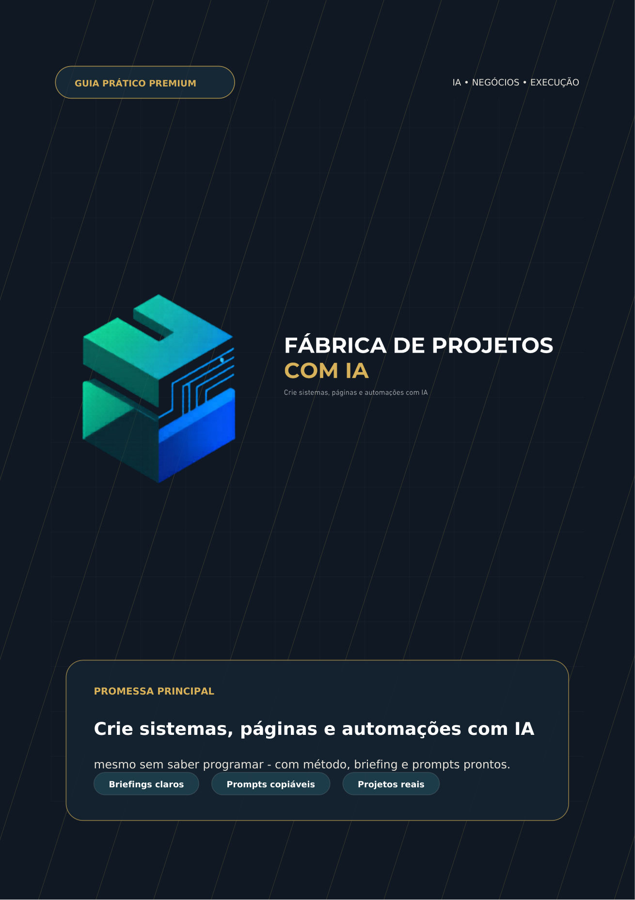
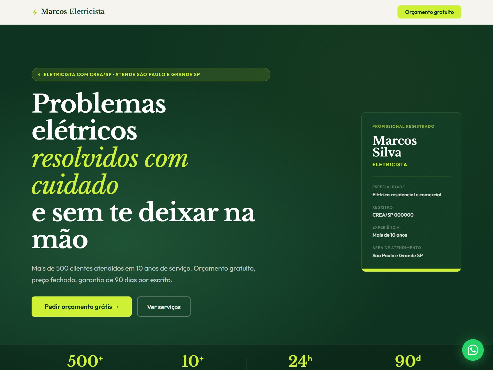

Dependia de terceiros
Programador, agência, freelancer. Orçamento caro, prazo longo e o resultado vinha diferente do que você imaginou.
// IA × Negócios × Execução
A maioria usa I.A. para escrever textos. Aqui você aprende a usar I.A. para construir coisas que funcionam — landing pages, catálogos, CRMs, dashboards e automações para pequenos negócios.
Programador, agência, freelancer. Orçamento caro, prazo longo e o resultado vinha diferente do que você imaginou.
Termos em inglês por todo lado e nenhum passo a passo claro. Sem saber por onde começar, a ideia ficava parada.
Você até pedia para a I.A., mas sem direção ela devolvia algo vago — e projeto genérico não resolve dor real.
A diferença não está em saber código. Está em saber conduzir a I.A.
Quem aprende a transformar uma ideia confusa em um pedido claro ganha uma vantagem enorme: testa projetos mais rápido, cria protótipos e vende soluções simples. Você deixa de ser usuário de I.A. e passa a usá-la como força de execução.
Transforme a ideia bagunçada em um pedido claro, com escopo enxuto.
A I.A. monta a versão mínima que já resolve a dor principal.
Você revisa copy, visual e usabilidade — e pede ajustes específicos.
Travas automáticas checam senhas expostas e riscos antes de publicar.
Coloque no ar e gere criativos e prova social para conquistar clientes.
Não é só um PDF. É um kit completo, pronto para usar.
O passo a passo do método: como pensar, descrever e revisar seu projeto do início ao fim.
Atalhos que criam landing page, CRM, painel de vendas, anúncios e mais. Você descreve, a IA monta.
Um time virtual — designer, redator, gerente e revisor — que cuida de cada parte do seu projeto.
Verificações automáticas que avisam sobre senha exposta ou erro antes de você publicar.
Textos prontos para copiar, colar e adaptar em cada etapa do projeto.
Cada um com o passo a passo completo: o que pedir, o que copiar e como entregar ao cliente.
Passo a passo para ligar seu projeto a planilhas, pagamentos, WhatsApp e outras ferramentas.
O pacote completo entra no seu Claude Code com um comando — sem configuração complicada.
Página, anúncios e roteiro de divulgação prontos para você também vender esses serviços.
Do guia ao projeto pronto — pensado para quem está começando


Cada um resolve uma dor simples, repetitiva e — o melhor — vendável.
Lojistas, prestadores, consultores e autônomos que dependem de WhatsApp e planilhas soltas e querem parar de depender de terceiros para tirar ideias do papel.
Marketing, BI, operações, vendas e atendimento que vivem cercados de planilhas e processos manuais e já pensaram “dava para automatizar isso”.
Há mais de 10 anos ajudo pequenos negócios a venderem mais — muitas vezes com correções simples e o uso inteligente da tecnologia. Já foram centenas de empresas. A Fábrica de Projetos com I.A. nasceu disso: reunir o que realmente funciona e colocar na mão de quem não sabe programar.
Antes de decidir →
Baixe o kit com 10 prompts prontos e teste o método antes de comprar — do briefing à entrega ao cliente, sem precisar saber programar.
Baixar o Kit de 10 Prompts — grátis →Sem cartão. Sem compromisso.
acesso completo
Guia completo + 12 ferramentas prontas, 6 assistentes de IA, biblioteca de prompts, 12 projetos práticos e material de venda.
Pagar um programador por um único projeto: R$ 3.000+
R$97
Pagamento único · parcelamento disponível no checkoutCompra segura · Garantia de 7 dias · Acesso imediato
Não. O material foi feito para quem não quer virar programador. Você aprende a conduzir a I.A. com clareza — ela escreve o código.
É uma I.A. que trabalha dentro do seu projeto: cria arquivos, monta telas e revisa o que entrega. O guia ensina a instalar e usar do zero, passo a passo.
Se você tem uma loja, presta serviço, atende por WhatsApp ou trabalha com planilhas, sim. São 12 projetos pensados para pequenos negócios.
Com os prompts e modelos prontos, dá para colocar a primeira versão útil de pé no mesmo dia.
Sim. Você tem 7 dias para testar. Se não for para você, devolvemos o valor.
O próximo projeto começa com um bom briefing.
Começar agora →